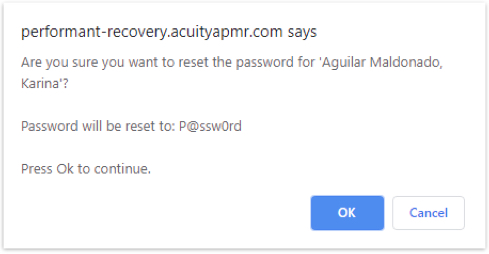
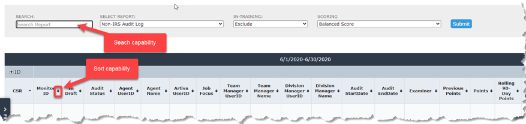
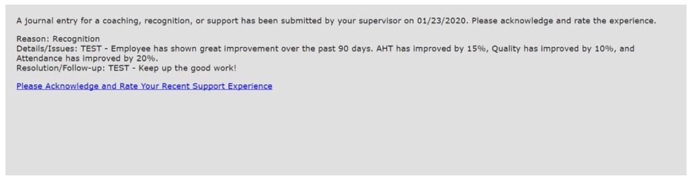

- System Login
- Password Reset
- Communications and Support
- Filters and Views
- Audit Status Description
- Reviewing Audit Monitoring Forms
- Reports
-
Sidekick - Digital Ally for the Frontline Superhero - Accessing Sidekick
- The Sidekick Journal
- Adding a Journal Entry
- Performance Trend
- Touch Count / Touch Rank
- Trailing Twelve month (TTM) Average - Touch Count / Performance Trend
- Sidekick Touch Quality
-
Download Guide (PDF) -
Back to Top
Acuity Performance Management System - Performant Recovery Manager's User Guide
System Login

When you login for the first time (simply enter the user name and password into the appropriate fields as shown in the screen shot above), you will be prompted to change the default password (typically P@ssw0rd) to one of your own (remember it or store it somewhere safe for future reference should you forget it).
At some point during or near the end of training, you should have received a user name and a default password to access Acuity. A special url has been set up for you to access Acuity -
https://performant-recovery.acuityapm.com/
Password Reset
-
To reset an employee's password, first select that employee from the
"CSR" filter on the left

-
Open the menu and select "Reset CSR Password"
-
Once clicking "Reset CSR Password", a prompt will appear asking you to
confirm the password change, along with what the new password will be

- To confirm the password change, simply click "OK"
Communications and Support
You can reach out to your supervisor by using the Chat feature accessible at the top of Acuity.
Communication may also be facilitated via Acuity's conventional Messaging feature accessible via the envelope icon. A round marker next to the envelope icon will indicate when a new message has been received.
Filters and Views
Filters located in Acuity's left panel - enabled or disabled based on role - determine what information is displayed in the main report window. The filter is expandable and collapsible.
To isolate specific data (location, DM, TM, CSR, or date range) use the filter. The data selection in the Filter panel is based on hierarchy. Example: Team Managers can view all CSRs on their teams. CSRs can only see their own data. To view historical performance, select a previous date range from the Score View filter.
TIP: after selecting filters, click the Submit button to run the new or modify the existing report.
Audit Status Description
Reviewing Audit Monitoring Forms
Pending Dispute Review
To review the Audit Monitoring Forms that are in a "pending" status, select the IRS or Non-IRS Pending Review report.
- Click on the Reports tab.
- Select IRS or Non-IRS Pending Review report from the dropdown menu.
-
Click on Filter to expand the Filter panel.
-
Select the CSR.
- "All" will list the pending CARs for all the CSRs on your team.
-
To view the report for a specific CSR, click in the white space
next to "All" to display the list of CSRs on your team and select
the CSR name

- Select the Score View (date range). To select the date range, click on the dropdown menu.
-
Click Submit to run the report. The results will appear in the window
along with any CARs that are currently in process. CARs that require
your attention will have the following statuses:
- Pending Dispute Review
- Pending Corrective Action -
Click on the X to collapse the Filter panel. The report will be displayed in the window.
-
Click on the Monitor ID # to open the CAR monitoring form with
Pending Dispute Review status.

-
Below is an example of the CAR monitoring form with the status:
Pending Dispute Review. In this example the agent has disagreed with
at least one finding.
-
Dispute is Valid - in other words, you agree with the agent and
the finding should be disputed. Click on the first radio button,
enter comments and then click Submit Response to Compliance /
Complete Dispute Review. This releases the form to
Compliance for review. This will change the status to Pending Compliance Review. Once the form is released to Compliance, it can no longer be edited by you. Note: If you click Close, the form will close and remain in Pending Dispute Review status. - Dispute is Invalid - in other words, disagree with the agent and the finding should not be disputed. Click the second radio button, enter comments and then click Submit Response to Compliance / Complete Dispute Review. This will change the status to Pending Corrective Action (provided that no other findings on the CAR are being disputed).
-
Dispute is Valid - in other words, you agree with the agent and
the finding should be disputed. Click on the first radio button,
enter comments and then click Submit Response to Compliance /
Complete Dispute Review. This releases the form to
-
After the Submit Response to Compliance / Complete Dispute Review button
is clicked, you will navigate back to the IRS or Non-IRS Pending Review
report. Click Submit again to re-run the report, this will display CAR's
new status:
- Pending Corrective Action - you found the agent's dispute invalid or the agent agreed with all the findings and observations on the form.
-
Pending Compliance Review - you found at least one of the disputed
findings to be valid and therefore the dispute will be reviewed by
Compliance. Once Compliance has completed the review, the next status
will be Pending Corrective Action.
Once Compliance completes their review, the CAR will be returned to perform the Corrective Action. Note: this step will still take place even if the finding was removed as this will serve as your notification of the Compliance review results.
Pending Corrective Action
To review the Audit Monitoring Forms that are in a Pending Corrective
Action status, select and run the IRS or Non-IRS Pending Review report.
Select a CAR with this status and click on the Monitor ID # to open the
form.
- Enter comments in the Manager Corrective Action Comment box.
- Check box to confirm the Corrective Action with the Agent is Complete.
- Click the Save Monitor button.
-
The form will go back to the agent for confirmation of the Corrective
Action training. Once they have completed this step, the CAR will be complete.
Reports
Report Menu
Reports are enabled or disabled based on the user's role and permissions. The following are the reports available to managers:
Monitors
- IRS or Non-IRS Audit Log - this is a list of all CAR details within select date range.
-
RS or Non-IRS Point Summary - this report provides a summary list for the following:
- Date Range Points - These are the points of the completed & pending CARs for the selected date range.
- Rolling 90-Day Points - These are the completed & pending CAR points from the end date of the date range and any points going back 90 days (this number includes the Date Range Points). Note: if the date range end date is greater than the current date, the current date is used as the 90-day reference point.
- Pending Points - These are CAR points that are in a pending status and not yet complete.
- In-Draft Pending Points - These points are only visible for the Compliance and Admin teams.
- IRS or Non-IRS Pending Review - This is the report for any CARs that are in the review stage and not yet complete for the selected date range.
- IRS or Non-IRS Findings - This report lists all Findings for every CAR (regardless of the status) in the selected date range.
Sidekick
- Sidekick Summary - Supervisor coaching & agent support system
User Access Reports
- Hierarchy Assignments - Displays team information
Report Generation:
- Click on the Reports tab.
- Select the report from the drop-down menu.
-
Click the Filters tab to expand the Filter Panel. Note: Project,
Location, DM, TM, and CSRs will be pre-populated based on hierarchy.
You will only be able to access the data for your team and cannot
view anyone else's team.

-
Select the CSR.
- "All" will list the pending CARs for all the CSRs.
-
To view report for a specific CSR, click in the white space next
to "All" to display the list of CSRs.
- Select the Score View (date range). To select the date range, click on the dropdown menu.
- Click Submit to run the report.
-
Click the X to collapse the Filter panel. The report results will be displayed in the window.
Report Navigation Tips:
- Reports have Search capability to further narrow down the report results.
-
The data can be sorted by clicking the arrows after the column heading.

Sidekick - Digital Ally for the Frontline Superhero
Sidekick is an intelligent system for coaching, recognition, review, and performance management integrated with the Acuity contact center performance management platform.
Using Sidekick is Easy...
Accessing Sidekick

- Log into Acuity.
- Select an agent from the CSR (or similar label) drop down.
- Click Sidekick from the menu and it will load in the context of the selected agent.
The Sidekick Journal
The Sidekick Journal provides a place to document all of the interactions, such as coaching, recognition, monitors, goal-setting, etc., between team leaders (aka supervisors, etc.) and their agents. Adding journaling to your regular frontline management routine will ensure that you never have to guess with whom or in what ways you've lead and developed your team. The Journal is your reliable digital system of record.
Using the Journal is easy. By default, journal entries are listed in table format by Entry Date (most recent on top). Columns are sortable so that this view can be adjusted as desired.

Adding a Journal Entry
As you prepare to initiate a coaching session or other form of support interaction with an agent, click the blue Add New Record button located in the top right corner of the Journal.

- Fill in the Entry Date (current or past) and Delivered By fields.
- Select a Reason or Category of support type: Coaching, Recognition, Goal-setting, and Call Monitor are defaults, but other options may be presented.
- Enter notes/comments in the Details/Issues and Resolution/Follow-up fields to adequately document the support activity.
- If applicable, specify details for performance Goals in the Set Goal section per the relevant KPI and a date for Follow-up.
- Once the form is complete, click the Submit button and the new entry will appear in the Journal table.
Performance Trend
The Performance Trend displays the day-by-day performance scores by Balanced Score or specific KPI for either the Current or Last Month. The Performance Trend view also includes all of the journal entries recorded that same month. In this way, it's easy to visualize the impact of your agent support activities. Trend lines display performance for the focus agent as well as the team average. Mouse-over the dots on the black or blue trend lines will display details about the KPI or Balanced Score. Mouse-over the green dots on the x axis will display the summary for the Journal entry. Clicking the green dot will open the full Journal entry.

Touch Count / Touch Rank
Touch Count
Touch Count and Touch Rank reports provide context about the frequency of your interactions with agents and how this routine correlates with performance. Touch Rank looks at three data points:
- This CSR: Mouse-over the black bar shows the number of interactions ("touches") with the focus agent in the current month. Mouse-over the blue bar shows the average number of touches for the focus agent up to the past six months.
- Team Average: Mouse-over the black bar shows the average number of interactions ("touches") across all agents on the team. Mouse-over the blue bar shows the average number of touches across all agents on the focus team for up to the past six months.
- All CSRs: Functions just like Team and This CSR, but across all CSRs within the same department, program, or other comparable group.

Touch Rank
Touch Rank displays the number of "touches" and Balanced Score for each of the agents on the specified team. The focus agent is highlighted in red. The second column shows the number of touches (supervisor/team lead support interactions). The third column displays the Balanced Score (total performance score reflective of all weighted KPIs). Each column can be sorted to customize the view or be adjusted by Current and Last Month.
Trailing Twelve Month (TTM) Average - Touch Count/Performance Trend
The Trailing Twelve Month trend chart displays the average Touch Count per agent over the most recent 12 month period. The black line reflects the focus team and the blue line reflects the average across all teams performing the same or similar function. The view can be adjusted to display the Trailing Twelve Month Performance Score (Balanced Score) for the focus (Your) or All Teams using the toggle switch at the top right corner of the chart.

Sidekick Touch Quality
The new Sidekick Touch Quality feature provides supervisors with real-time insight into the support quality delivered to their agents. Touch Quality allows employees to anonymously rate each one of their interactions with their supervisor on a scale from 1 to 5. The addition of Touch Quality to the Sidekick support system produces a continuous measure of employee satisfaction and ensures the integrity of support delivery.
Touch Quality Workflow
-
Touch Quality is a process that takes place after a Sidekick
Journal entry has been completed by a supervisor for one of their agents
-
Once a journal entry has been submitted for an agent, an automatic
notification is sent to the agent to acknowledge and anonymously
rate that interaction with their supervisor
-
The automatic notification will be received via the message
center inside of Acuity, which can be accessed by clicking the
Envelope Icon or clicking "Message Center" and opening the
notification message
-
The notification message will include the following information (also pictured below):
- Date the journal entry was submitted
- Reason for the entry (example: Coaching or Recognition)
- Details or Issues that were discussed (areas of opportunity)
- Resolution or Follow Up notes (action plan)
- Any goals that were set (Note: if no goals were set, no data will appear)
-
Link to rate the recent support experience

-
The automatic notification will be received via the message
center inside of Acuity, which can be accessed by clicking the
Envelope Icon or clicking "Message Center" and opening the
notification message
-
To rate the interaction, agents will simply click the blue link that
reads, "Please Acknowledge and Rate Your Recent Support Experience"
which will open a window that allows the employee to select between
one and five stars to rate the interaction
-
NOTE: ALL RATINGS ARE ANONYMOUS TO SUPERVISORS
-
NOTE: ALL RATINGS ARE ANONYMOUS TO SUPERVISORS
-
Once ratings are submitted, supervisors and managers will be
able to track their Touch Quality scores through the Sidekick
page, using the Touch Quality chart

-
The "My Team" score is the average score of all ratings
received for the selected supervisor's team during the chosen
date range
- There are currently two date range options: Current Month and Previous Month
-
The "All Team" score is the average score of all ratings
received for all teams assigned to the selected Project
- This provides supervisors and managers with the ability to compare employee satisfaction against multiple teams, and the average for all teams
- Additional information is provided along the bottom of the graph, which includes the number of entries (journal entries submitted), number of ratings (how many of the entries have been acknowledged and rated), and the ratio (Ratings / Number of Entries)
-
The "My Team" score is the average score of all ratings
received for the selected supervisor's team during the chosen
date range
Back to Top